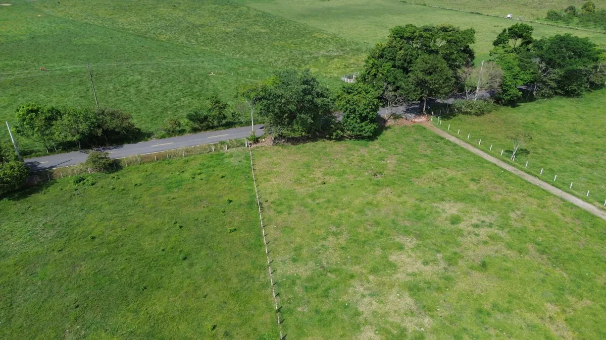

Avalúos Comerciales de Fincas y Predios Rurales en el Meta
Tasación oficial certificada para fincas ganaderas, agrícolas y campestres. Dictamen pericial con visita técnica en campo y fotogrametría aérea con dron RTK, avalado con plena validez ante bancos, notarías y estrados judiciales.

Haciendas, Fincas Ganaderas & Predios Campestres
¿Para qué trámite necesitas el avalúo de tu finca?
El informe pericial se adapta al formato exacto exigido por cada institución receptora:
Crédito Agropecuario e Hipotecario
Aprobación garantizada ante Banco Agrario, Finagro, Bancolombia y Davivienda. Cumple todos los requisitos del comité de crédito y riesgos bancarios.
Compraventa e Inversión Segura
Fija o valida el precio real de la hectárea con soporte estadístico. Evita pagar sobreprecio o vender por debajo del valor justo de mercado en la zona.
Sucesiones y Partición de Herencias
Tasación equitativa y despiece pericial de hijuelas para notarías o juzgados de familia. Elimina discrepancias entre herederos con un dictamen imparcial.
Litigios y Servidumbres (Art. 226 CGP)
Prueba pericial técnica para servidumbres petroleras, gasoductos, líneas eléctricas, procesos de expropiación o procesos divisorios en estrados judiciales.
¿Qué incluye el Dictamen Pericial Certificado?
No entregamos una simple carta de opinión. Recibes un expediente técnico y científico foliado bajo estándares NIIF / IFRS 13 y la Resolución IGAC 620 de 2008:
Vuelo Aerofotogramétrico con Dron RTK
Ortofotomapa métrico georreferenciado con delimitación visual de linderos, topografía y fuentes hídricas.
Inventario y Tasación de Mejoras
Valoración desglosada de casas principales, establos, corrales, cercas, pastos mejorados, nacederos y cultivos permanentes.
Estudio de Mercado Rural Homogeneizado
Muestreo comparativo de ofertas y ventas reales en el mismo sector con Coeficiente de Variación de Pearson < 10%.
Firma Colegiada RAA & QR de Verificación
Firmado digitalmente por perito inscrito en el Registro Abierto de Avaluadores con código de verificación para entidades bancarias.
Blindaje técnico contra objeciones
Cada dictamen emitido por la Lonja de Avalúos del Meta cuenta con respaldo pericial y póliza de responsabilidad civil profesional, garantizando que el banco o tribunal admita el informe sin objeciones por vicios de forma.
- Documento PDF digital de alta resolución protegido con firma criptográfica.
- Copia foliada física encuadernada si la entidad lo requiere.
- Copia del certificado RAA vigente del perito y póliza civil.
- Archivos KMZ / Shapefile del levantamiento georreferenciado.
¿Cómo se realiza el avalúo en 3 sencillos pasos?
Proceso sin complicaciones desde la radicación hasta la entrega oficial:
Envías los Documentos
Nos compartes por WhatsApp el Certificado de Tradición y la copia de la Escritura. Revisamos cabida jurídica y te enviamos la cotización oficial en menos de 2 horas.
⚡ Respuesta inmediataVisita Técnica en la Finca
El avaluador colegiado RAA se traslada a la finca, ejecuta el vuelo fotogramétrico con dron RTK, recorre linderos y hace el inventario detallado de construcciones y pasturas.
🚁 Inspección en 24 a 48hEntrega del Dictamen Oficial
Procesamos los datos en laboratorio econométrico y emitimos el dictamen final foliado con firma RAA y código QR, listo para radicar en el banco o tribunal.
📅 Entrega en 3 a 5 díasDocumentos requeridos para radicar tu avalúo
Tener estos documentos a la mano agiliza la cotización y permite agendar la visita en menos de 24 horas:
Certificado de Tradición
Con vigencia menor a 30 días expedido por la Superintendencia SNR.
Copia de la Escritura
Copia simple de la escritura pública registrada que describe cabida y linderos.
Último Recibo Predial
Recibo del impuesto predial unificado para corroborar la cédula catastral.
Plano Topográfico
Plano previo, coordenadas o ficha catastral IGAC (si se encuentran disponibles).
Caso de Éxito: Hacienda Ganadera en San Martín, Meta
Tasación integral de 54 Hectáreas con inventario de mejoras
El desafío: El propietario requería acreditar el valor comercial de una finca ganadera ante el Banco Agrario para un crédito de inversión en pastos y maquinaria. La escritura registraba discrepancias en el lindero del caño limítrofe.
La solución: Mediante vuelo con dron RTK se generó el ortofotomapa métrico que delimitó la cabida real (54.2 Ha), se inventariaron 4 corrales de vástago, 2 pozos profundos y 32 hectáreas de pasto Brachiaria. El dictamen fue admitido por el comité de riesgos del banco en 4 días hábiles sin ninguna objeción.
Preguntas Frecuentes sobre Avalúos de Fincas
¿El avalúo de la finca es aceptado por el Banco Agrario y otras entidades financieras?
Sí. Nuestros dictámenes son expedidos por avaluadores colegiados con Registro Abierto de Avaluadores (RAA) vigente bajo la Ley 1673 de 2013 y normas NIIF / IVSC, cumpliendo a cabalidad las exigencias de Banco Agrario, Finagro, Bancolombia, Davivienda y Banco de Bogotá.
¿Por qué es indispensable el uso de dron RTK en un avalúo rural?
El dron con tecnología RTK permite generar un ortofotomapa métrico georreferenciado de alta resolución, verificando linderos reales, topografía, coberturas vegetales, fuentes hídricas e inventario de construcciones, eliminando discrepancias frente a la escritura pública.
¿Cuánto tiempo tarda la visita a la finca y la entrega del informe final?
La visita técnica en campo se agenda entre 24 y 48 horas tras radicar los documentos. El dictamen pericial foliado y firmado se entrega en un plazo garantizado de 3 a 5 días hábiles.
¿Cuál es la diferencia entre el avalúo catastral del IGAC y el avalúo comercial RAA?
El avalúo catastral es un valor fiscal masivo fijado por el municipio para liquidar el impuesto predial (suele estar entre el 40% y 60% del valor comercial). El avalúo comercial certificado RAA refleja el precio real de mercado actual en una negociación libre entre compradores y vendedores.
¿Qué sucede si el área física real de la finca no coincide con la escritura?
El informe pericial documenta la cabida física real medida con tecnología GNSS/Dron y establece la conciliación frente al área jurídica de la escritura, brindando soporte técnico para eventuales trámites de aclaración de linderos o saneamiento catastral ante el IGAC y la Notaría.
Otros servicios periciales para tu predio rural
Estudio de Títulos y Saneamiento
Análisis registral a 20 y 30 años ante Notarías y Superintendencia SNR para blindar tu compra antes de desembolsar.
Topografía y Deslinde de Linderos
Levantamiento planimétrico y altimétrico con estación total y GNSS doble frecuencia para conciliación ante IGAC.
Avalúo de Lotes y Terrenos
Tasación de lotes campestres, parcelaciones y terrenos de expansión bajo normativa del POT municipal.
Tasa tu finca con el respaldo pericial más riguroso del Meta
Agenda la visita técnica con dron RTK y obtén tu dictamen oficial en 3 a 5 días hábiles, aceptado por bancos, notarías y tribunales.